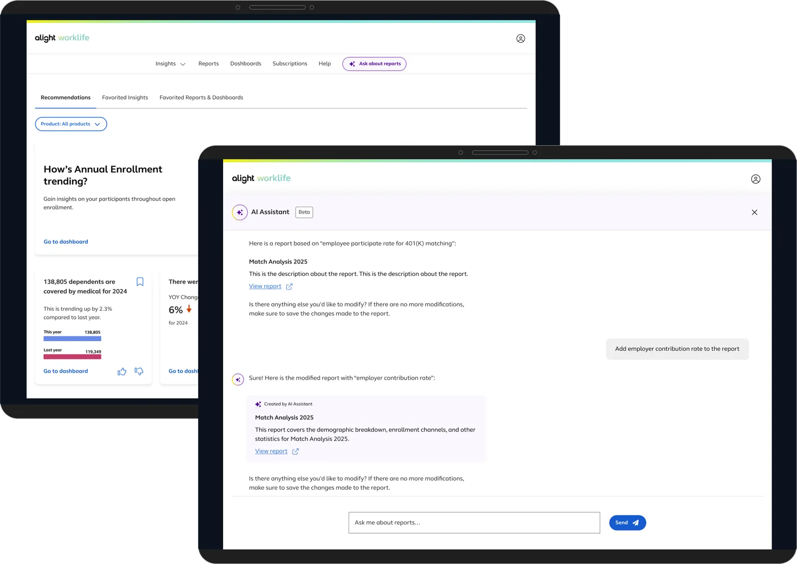
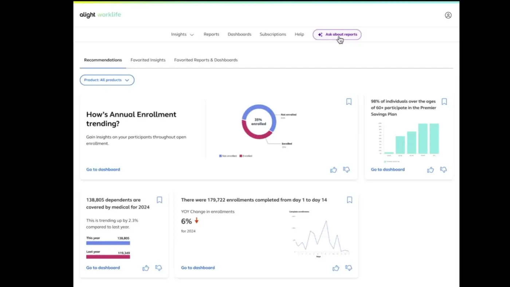
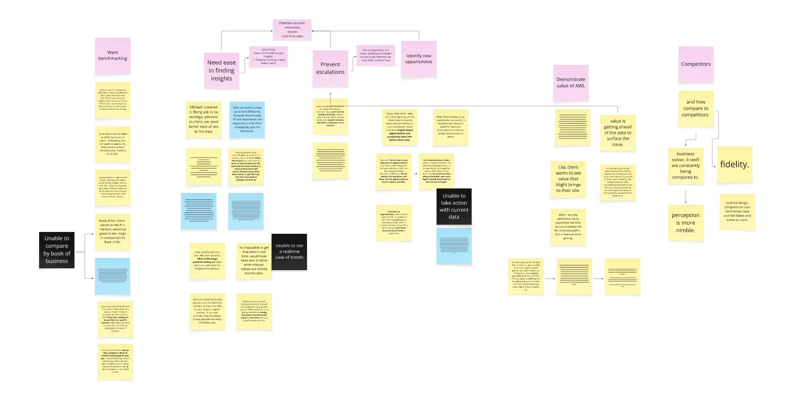
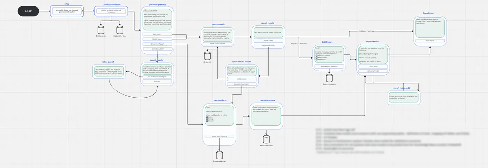
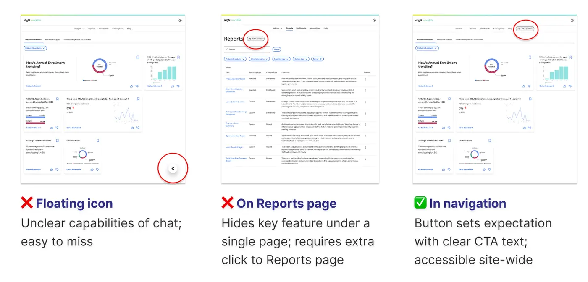
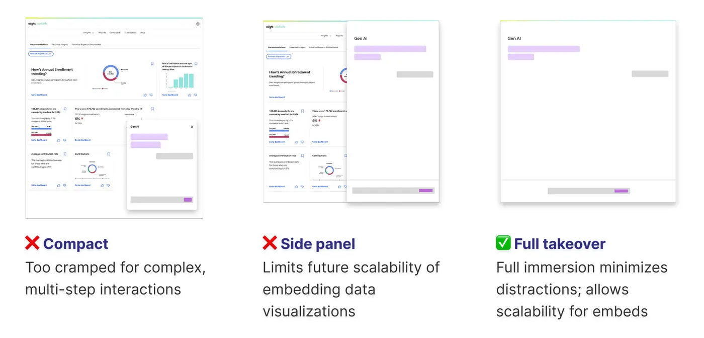
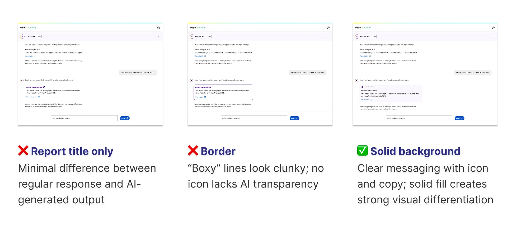
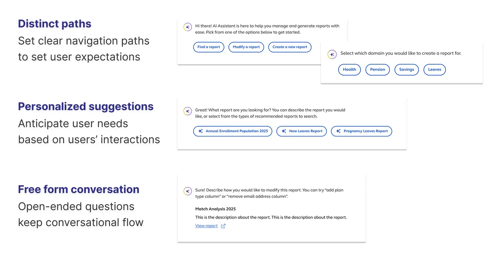

AI Assistant for Reports
From
Support tickets
To
Self-service
To empower clients to meet their own analytics needs, the business set out to design an AI-driven report authoring experience that reduces manual support demands and improves overall client satisfaction. This initiative aimed to simplify complex reporting tasks through intuitive AI assistance, giving clients greater control and confidence with their reports.
- Role
- Product design lead: Design direction and strategy
- Guidance for designers, including a content designer and a researcher
- Team
- 2 product designers, 1 content designer, 1 user researcher, 1 director of product management, 1 engineering
- Timeline
- 1 quarter

Problem
Clients struggled to self-service access to their analytics around their employee experience, and over-reliance on client teams caused inefficiencies. High level pain points included:
- Analytics were scattered across multiple platforms
- Non-tech savvy users struggled with manually creating reports and dashboards
- Clients’ ad-hoc requests resulted in delays, adding to client frustration
Solution
How can AI help clients with different technical skills get their analytics faster and easier, while decreasing the need for client team support?
Narrow Down the Scope
Focus on report capabilities: find, modify, create
GenAI Chat Experience
Intuitive conversational experience, regardless of level of data expertise
Prototype

Process
Discovery
I worked with the PM director and researcher to compile key questions about the clients’ use of analytics:
- How do users currently use analytics?
- What drives users’ data needs?
- Where are areas of friction?
Primary research methods consisted of:
- Client surveys: Gather volume of responses to inform directional themes
- Interviews with clients and client teams: Understand details of their processes, goals, and pain points

Key Insights
Two User Types
- Tactical: Use analytics for daily, weekly, or monthly tasks
- Strategic: Use analytics to guide long-term plans
Multiple Use Cases for Analytics
- Recurring status meetings
- Targeting for campaigns
- Ad-hoc requests from leadership
Heavy Report Usage
Most users were tactical, and they used reports more often than dashboards
Varied Level of Expertise
Some users can pull their own reports, while others require client team support
Backlogged Client Team Requests
As client requests piled up, client teams struggled with delivering requests on time
User Flow
Based on the key insights, I partnered with the engineering lead to map out the user flow for the 3 main paths:
- Find a report
- Edit an existing report
- Create a new report

Design Iterations
Entry Point
Choosing the AI assistant’s entry point was crucial, as it needed to be visually prominent, while setting user expectations on the specific reporting capabilities of the chat.

Chat Window Size
The chat window needed to scale to accommodate future functionality, including dashboards, report previews, and data visualizations. In collaboration with the engineering lead, we decided to design a scalable chat window upfront, rather than redesigning it in later phases.

Patterns for AI-Generated Output
Design iterations for indicating AI-generated output focused on clarity and transparency. The pattern required distinguishing AI-generated content from standard chat responses, helping users immediately recognize when content had been created or modified by AI.

Guided and Conversational AI
As the AI assistant had functionality limited to reports, it was important to clearly indicate when users had finite paths to choose from, and where users could chat freely.

Impact
AI assistant set to roll out to 350+ clients across 3 domains (Leaves, Health, Wealth)
Set the foundation for AI-powered design patterns and chat voice and tone
Increased client self-service and reduced ad-hoc client team requests
Positive feedback from alpha and beta clients, rebuilding client trust
Challenges & Learnings
- Focus on outcomes, not features: Although AI can support countless analytics processes, the team focused efforts on the priority use case of reports to deliver value where it mattered most
- Structure vs. free-form conversation: While the AI assistant supported conversational interactions, it was important to set user expectations around finite choices. Users needed to understand when they were navigating a limited set of options versus engaging in open-ended conversation with the assistant
- Limited client access for user feedback: The project faced challenges in recruiting client end users for feedback. I partnered with the Director of User Research and the Client Communications team to design and execute targeted recruitment efforts.